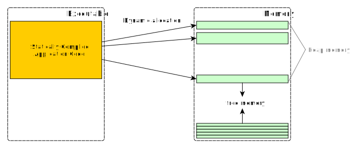
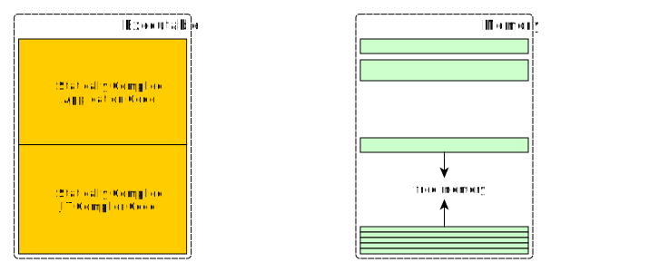
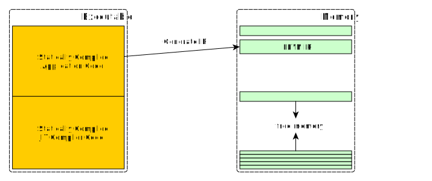
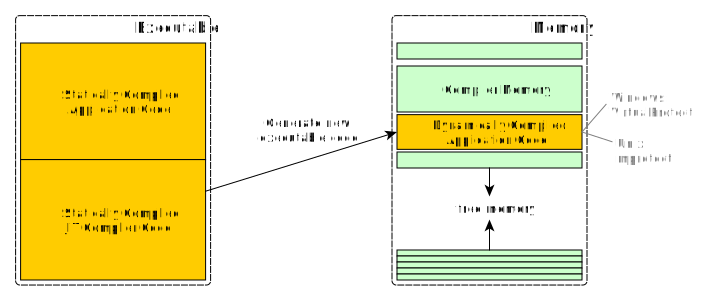
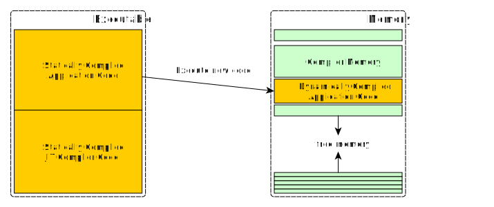

Compiling at Runtime w/ LLVM
|
Stefan Gränitz @ LLVM Social Berlin Thursday, September 29th 2016 |
|
|
Terminology
Whenever a program, while running, creates and runs some new executable code which was not part of the program when it was stored on disk, it’s a JIT. Eli Bendersky
Widely used as synonyms:
- JIT = Just-in-Time = Runtime Compiler
- AOT = Ahead-of-Time = Static Compiler
What's the difference? (technically)
Static Compilation
Compile → Link → Load → Run
Runtime Compilation
Compile → Load → Link → Run
| Runtime Compiler | Static Compiler | |
|---|---|---|
| Compile | emit machine code | emit assembly |
| Link | resolve symbols & relocations | use system tools for static & dynamic linking |
| Load | provide & manage memory | use system loader (implicitly) |
| Run | lifetime management for heap allocations |
nothing to do as long as DLLs aren't unlinked |
JIT Opportunities
- → determine exact hardware features
- → inlining for runtime-data
- → hot-code optimization
- → source-code deployment?
You can JIT yourself!
It's pretty simple actually:
- → allocate some virtual memory
- → write machine code into it
- → switch it to executable
- → call/jump to the address
Example: RelocationStubsPlayground (VC++ on Win64)
But DIY is cumbersome, let's use LLVM
What's that?
A compiler infrastructure.
So...?
Well it defines an intermediate representation.
And it provides a set of tools to manipulate it.
What do we gain?
- → cross-platform, cross-architecture
- → codegen: mature API to emit LLVM IR
- → linking: built-in relocation resolution, guided symbol resolution with good extension points (e.g. LambdaResolver)
- → loading: built-in memory managers
Basically it takes away all the really heavy stuff!
JIT Basics
The 20000ft overview
    Engines
- → "legacy JIT" removed with 3.6
- → MCJIT introduced with 3.4
- → ORC introdcued with 3.7
MCJIT (Machine Code JIT)
- → monolithic
- → based on MC API's (CPU instruction-set tools)
- → strict module-based compilation
- → single RuntimeDyld for all linking jobs
- → manual finialization: for relocations & exec switches
ORC (On-Request Compilation)
- → set of components: layers and utils
- → uses MC layer & handles module sets
- → re-enables function-at-a-time "lazy" jitting
- → one RTDyldMemoryManager per module
- → on-demand finalization
A few notes on LLVM IR
; ModuleID = 'test'
target datalayout = "e-m:o-i64:64-f80:128-n8:16:32:64-S128"
; Declare the string constant as a global constant.
@.str = private unnamed_addr constant [13 x i8] c"hello world\0A\00"
; External declaration of the puts function
declare i32 @puts(i8* nocapture) nounwind
; Definition of main function
define i32 @main() { ; i32()*
entry:
; Convert [13 x i8]* to i8 *...
%cast210 = getelementptr [13 x i8], [13 x i8]* @.str, i64 0, i64 0
; Call puts function to write out the string to stdout.
call i32 @puts(i8* %cast210)
ret i32 0
}
; Named metadata
!0 = !{i32 42, null, !"string"}
!foo = !{!0}
Properties
- → Static Single Assignment (SSA)
- → type safety, low-level operations, flexibility
- → source language neutral
- → not platform specific
- → http://llvm.org/docs/LangRef.html
Representations
- → in-memory compiler IR
- → on-disk bitcode representation
- → human readable text form
Restrictions
- → designed for compiler optimizations
- → neither fully portable nor fully stable
Getting Started
Setup LLVM
-
→ no headers and libraries in prebuilt binaries anymore
http://lists.llvm.org/pipermail/cfe-dev/2016-January/046702.html -
→ step-by-step guide for building with CMake:
http://llvm.org/docs/CMake.html#quick-start -
→ examples and tips to reduce build times:
https://github.com/weliveindetail/JitFromScratch/#user-content-1-build-and-install-llvm
Command Line
clang++ `llvm-config --libs --system-libs`
-D__STDC_CONSTANT_MACROS
-D__STDC_LIMIT_MACROS
-lz -Wall -std=c++14
-o myExec mySource.cpp
CMake Tips
- →
find_package(LLVM) - →
llvm_map_components_to_libnames(LLVM_LIBS
core orcjit x86asmparser x86codegen) - → some quirks for cross-platform details
https://github.com/weliveindetail/StatefulJit/blob/master/CMakeLists.txt
Checkout the tools
See the IR that clang generates from C++- → browser: http://ellcc.org/demo/index.cgi
-
→ bash:
$ clang++ -S -emit-llvm foo.cpp
Run your IR to see what it does:
-
→ bash:
$ lli foo.ll - ( → browser: http://kripken.github.io/llvm.js/demo.html )
Explore code generation
http://github.com/weliveindetail/JitFromScratch
- → get familiar with the API for IR codegen
- → few answers on stackoverflow
- → typical reply is "see how clang does it"
- → can be challenging
Keep in mind
- → it's a great infrastructure, but it's not trivial
- → IR spec changes over time, e.g. llvm.js is still on 3.2 (2012)
- → C++ has no standard ABI, take care when linking against other compiler's code
- → on Windows, exceptions from jitted code cannot be caught yet https://llvm.org/bugs/show_bug.cgi?id=24233
How can I …?
- → Initialize LLVM for runtime compilation
- · use RAII container in real-world context
- · inits are reentrant-safe
- · never call
llvm_shutdown()and reinit
- → Setup a basic compiler with ORC
- · ORC = On-Request Comilation
- · 2-dimensional architecture: layers & tools
- ·
CompileOnDemandLayerfor lazy jitting
http://llvm.org/docs/tutorial/BuildingAJIT3.html
- → Declare a simple function
- → Dump generated code
- → Invoke a runtime compiled function
- · access function by name
- · names must be mangled (trivial for C functions)
- → Generate code for a simple function body
- → Make my IR more readable
- → Call a C-function from runtime compiled code
- · declare as external function during codegen
- · add symbol resolver to JIT and resolve from cstdlib
- · input names are mangled already:
abs→_abs - · remember to call
LoadLibraryPermanently(nullptr)
- → Finally understand
getelementptr- · simple address offset calculation
- · for arrays, compound-type members, etc.
- → Call a C++ function from runtime compiled code
- · declare with mangled name during codegen
-
· gcc-like ABI:
customIntAllocator→
__Z18customIntAllocatori -
· msvc ABI:
customIntAllocator→?customIntAllocator@@YAPEAHH@Z -
· for Windows support use:
Clang's mangler or explicit mappings
- → Use automatic optimizations in my compiler
- ·
IRTransformLayerto invoke optimizer - · IPO's
PassManagerBuilderto populate passes - · IPO = Interprocedural Transformations
- · control optimization details with flags, e.g.
BBVectorize→ Basic-Block vectorization
SLPVectorize→ Superword-Level Parallelism
- ·
- → Cache my binaries on disk
- · implement
llvm::ObjectCache - · pass instance to
IRCompileLayer
- · implement
Thanks!
Questions?
Code Examples:
https://github.com/weliveindetail/JitFromScratch
Referred Projects:
https://github.com/weliveindetail/DecisionTreeCompiler https://github.com/weliveindetail/StatefulJit